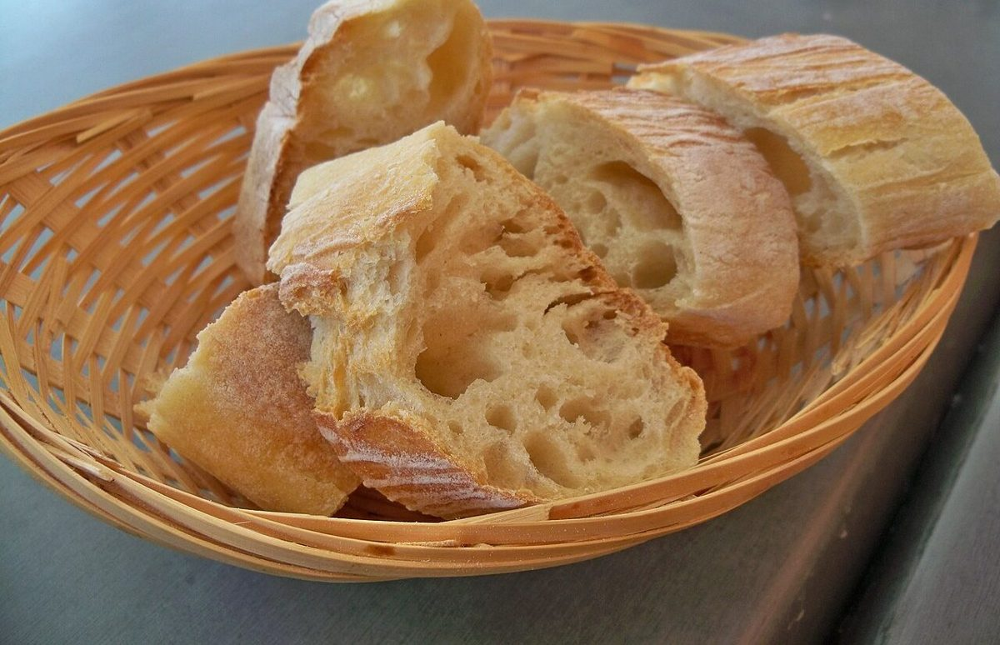

長手積み
店のこと
お店について確認できているのは、所在地・電話番号・Instagramのアカウントです。
確

店名
ムラカミベーカリー
認

業種
ベーカリー

済

確認できていること
お店について分かっていること
- 店名は「ムラカミベーカリー」、業種はベーカリー(パン屋)
- 所在地は岡山県岡山市北区御津矢原346(〒709-2107)
- 電話番号は090-2005-5923(Googleマップに記載の番号)
- Instagramのアカウントは @murakami__pan
- 営業時間・定休日・メニュー・価格・ご予約・駐車場は準備中
屋号の意味や由来は分かりません。ここでは何も断定していません。
想像してみる
長手を並べるように
このページの「想像してみる」部分は、制作側の想像です。お店の実際の様子・考え・商品とは関係ありません。
長手積みは、長い面だけをずらしながら並べていく積み方です。ものごとをひとつずつ同じ手順で重ねていく様子を、制作側はこの積み方に重ねて連想しました。お店の実際の仕事ぶりは分かりません。